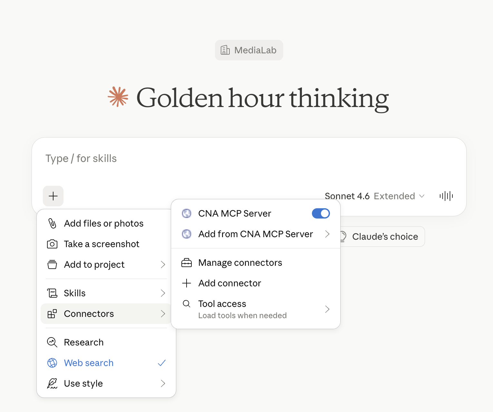
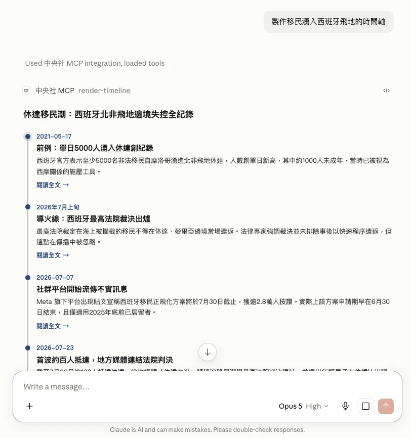
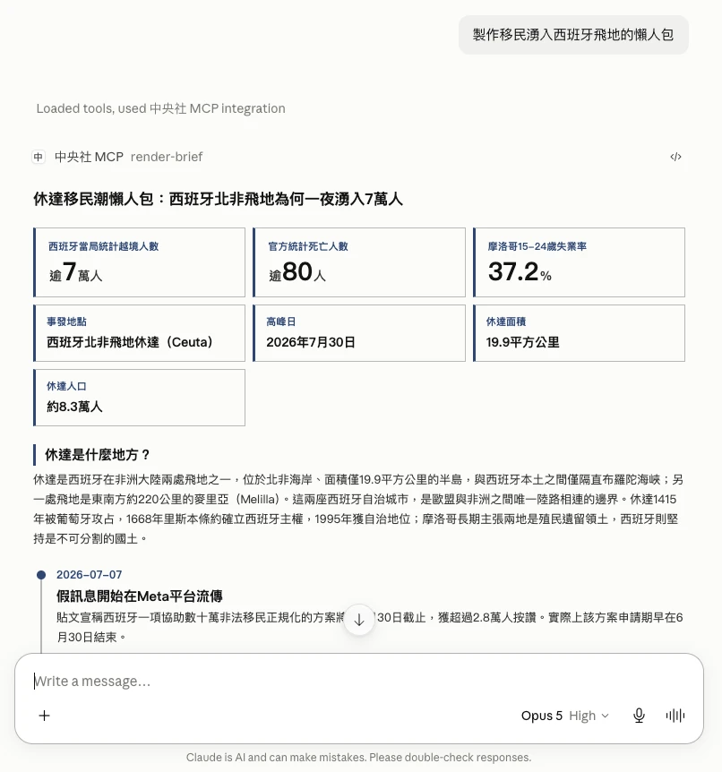
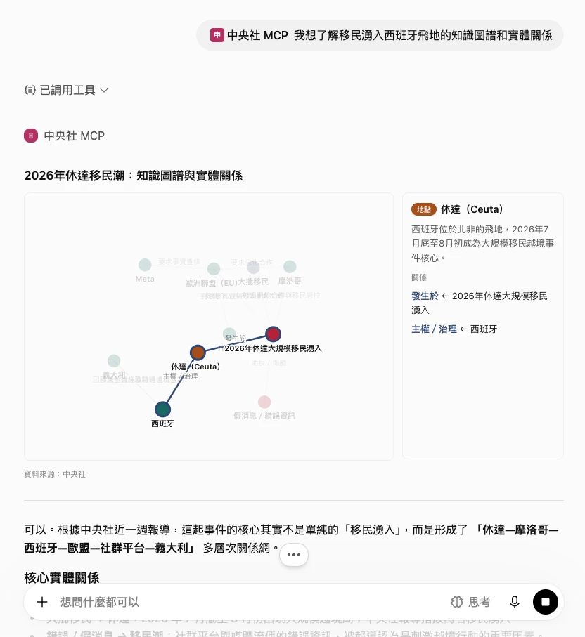
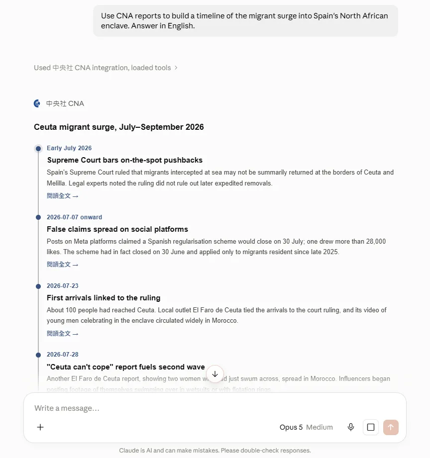
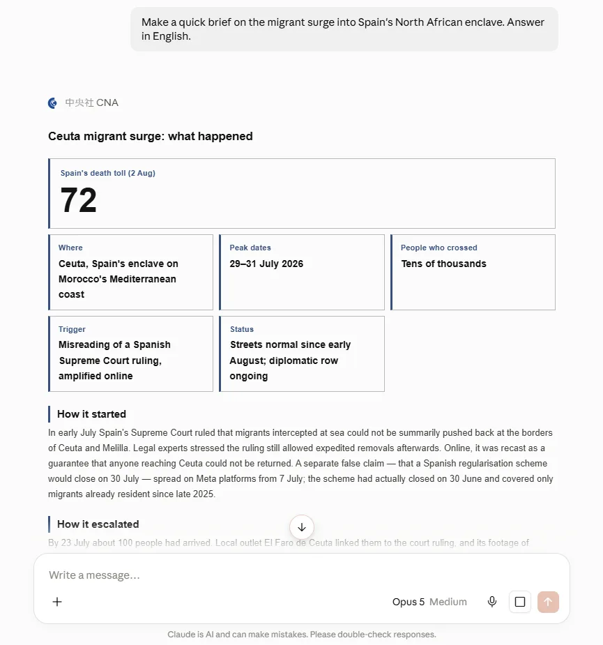
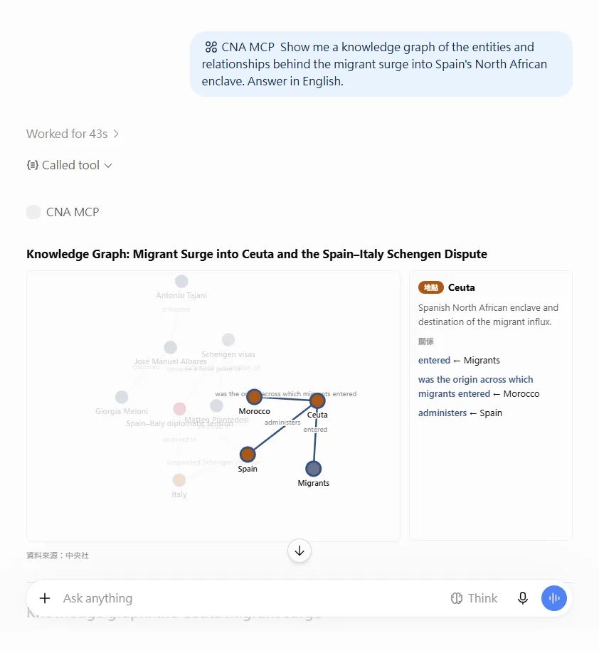

中央社 MCP Server：讓 AI 回答帶著可查證的新聞出處CNA’s MCP Server: AI answers that cite verifiable news
從原型、認證、計費到上架，一手打造中央社的 Model Context Protocol 服務。Claude、ChatGPT、Gemini、Grok 的使用者可以直接查詢中央社 1990 年以來的報導、圖庫與事實查核資料，AI 的回答也會附上原文連結。 I built CNA’s Model Context Protocol service end to end — prototype, auth, billing and directory listing. Users of Claude, ChatGPT, Gemini and Grok can search CNA reporting since 1990, its photo archive and fact-check data, and the AI’s answers link back to the original stories.
為什麼要做Why we built it
人們正在改變閱讀新聞的方式：不一定先點進新聞網站，而是直接在 ChatGPT、Claude 等對話介面裡提問。如果未來的新聞入口逐漸由搜尋框轉向聊天視窗，媒體更需要主動接入讀者已經使用的 AI，讓模型能找到可信、可追溯的新聞內容，也讓每一則回答都能帶讀者回到原始報導。
People are changing how they read the news. Instead of visiting a news website first, they increasingly ask questions in ChatGPT, Claude and other conversational interfaces. If the front door to news is shifting from a search box to a chat window, newsrooms need a better way to meet readers inside the AI products they already use—while giving models trustworthy, traceable reporting and linking every answer back to its source.

我扮演的角色My role
我參與了從釐清需求、規劃產品規格與商業化模式，到產品開發與上線的完整流程；在新聞專業、使用者需求與技術限制之間溝通，將構想轉成可實際使用的服務。
I worked across the full product cycle—from clarifying needs and defining the product specification to planning commercialization, building the service and shipping it. My role connects newsroom expertise, user needs and technical constraints, turning an early idea into a working product.
親手打造：產品特色與驗證What I built: product design and validation
- MCP Apps文字回答有其侷限，我研究 ChatKit 與 MCP Apps 等互動介面規格，挑選適合新聞情境的呈現方式，實作時間軸、懶人包、知識圖譜與報紙頭版等視覺化模組，讓資料不只「讀得到」，也更容易理解與探索。Text-only answers have limits. I studied interaction models including ChatKit and MCP Apps, then designed newsroom-specific modules—timelines, visual briefs, knowledge graphs and newspaper front pages—so information is easier to understand and explore inside the conversation.
- Instructions & tool descriptions系統指令與工具描述會直接影響 AI 是否正確選用工具。我反覆測試命名、描述、參數與使用情境，設計讓不同 AI client 更容易判斷何時調用中央社 MCP 的寫法。System instructions and tool descriptions directly affect whether an AI selects the right tool. I iterated on naming, descriptions, parameters and usage guidance so different AI clients can more reliably decide when and how to call CNA’s MCP.
- Evaluation我與同事共同設計 eval 評估，透過實際新聞問題檢查工具選擇、搜尋結果、來源完整性與回答品質，將觀察轉回產品與提示設計的改善依據。I worked with colleagues on evaluations using real news questions, checking tool selection, retrieval quality, source coverage and answer quality. We fed the findings back into product decisions and instruction design.






時間線Timeline
- 提出中央社 MCP 的產品構想與發展方向。Defined the product concept and direction for CNA’s MCP.
- 完成可實際連接 AI client 的產品原型。Completed a working prototype connected to AI clients.
- 規劃商品化、訂閱與計費模式。Planned commercialization, subscriptions and billing.
- 開放外部使用者訂閱。Opened subscriptions to external users.